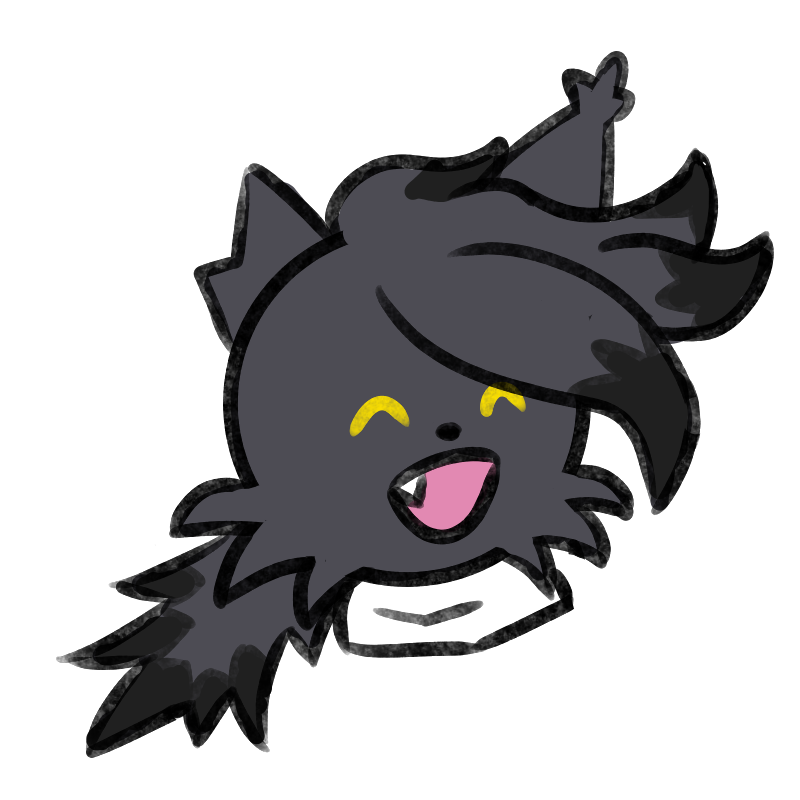

1/8

2/8

3/8

4/8

5/8

6/8

7/8

8/8


I'm an aspiring designer who's dedicated to the art of crafting intricate concepts, gameplay, mechanics and narratives for video games. There's nothing I love more than telling emotionally rich stories, so if you're seeking a storyteller who can also craft a wicked game, you've come to the right place!
A 2D puzzle platformer made in Unity 6.3 depicting a pawn playing double agent for both the Black Agency and White Agency, completing acts of sabotage against both parties
whilst being completely unaware of the sinister truth that lies beneath the surface of his operations...
I was the lead game designer for The Fool's Folly, expanding the initial concept of a chess-themed platformer into a minimalist, narratively substantial tale with
thematically fitting gameplay elements. You can see gameplay footage here, and you can read about the game in
the Game Projects section of my portfolio!
A 2D action platformer made in Unity 2022 depicting a stuntman traversing through a dungeon while a director obsessed over filming the journey in a single take berates
his every failure.
This was a game made for itch.io's Mini Jam 208, and I was the lead narrative designer of the game. I also helped design the enemies and obstacles present in the game!
You can see gameplay footage here, and you can read about the game in the Game Projects section of my portfolio!
A tabletop card game that has players taking turns drawing cards to hire actors and expending funds to create a jaw-dropping movie that will stun
both audiences and critics at the box office.
I was the creator, card designer and game designer of this entire tabletop game!
Inspired is a 2D puzzle platformer that depicts an artist (represented by a stick figure avatar) suffering from burnout seeking inspiration from browsing pictures on an art-sharing site
infested by AI-generated content. Throughout their journey, the player character
must utilise their tools as an artist to explore different
artworks across the website and come face-to-face against AI imagery that physically manifests
as corrupted creatures that attempt to ‘kill’ the player character’s motivation. At the end of a
level, they will encounter a boss creature that is a cheap, artificially created imitation of the
original artwork, which they unveil upon defeating the boss and uncover a certain element about
the drawing that gives them inspiration for theirs.
This was a concept game I conceived that involved the use of illustration software tools to solve platforming puzzles and challenges. It was largely inspired by the YouTube series
Animator vs Animation. You can view my other game concept in the Game Concepts section of my portfolio!
I made a replica of Metal Gear REX from the Metal Gear series. You can check out my other 3D Modelling Projects in the Modelling Projects section of my portfolio!
Illustrated various character art, environmental art and character reference sheets. You can view my other works in the portfolio!
I made custom graphics for events I host on Discord. You can view my other Photoshop works in the portfolio!
I wrote and narrated the voiceover present in this video for Offstage Malaysia's flagship Super Smash Bros. Ultimate major, AniManGaki 2025. You can view the video here!